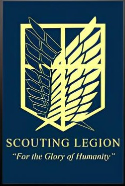
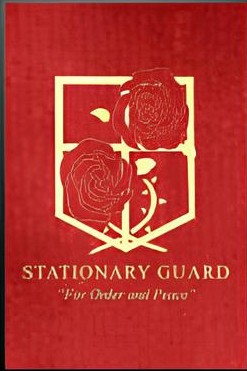
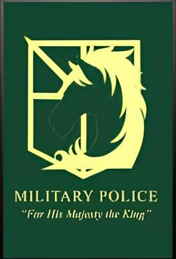
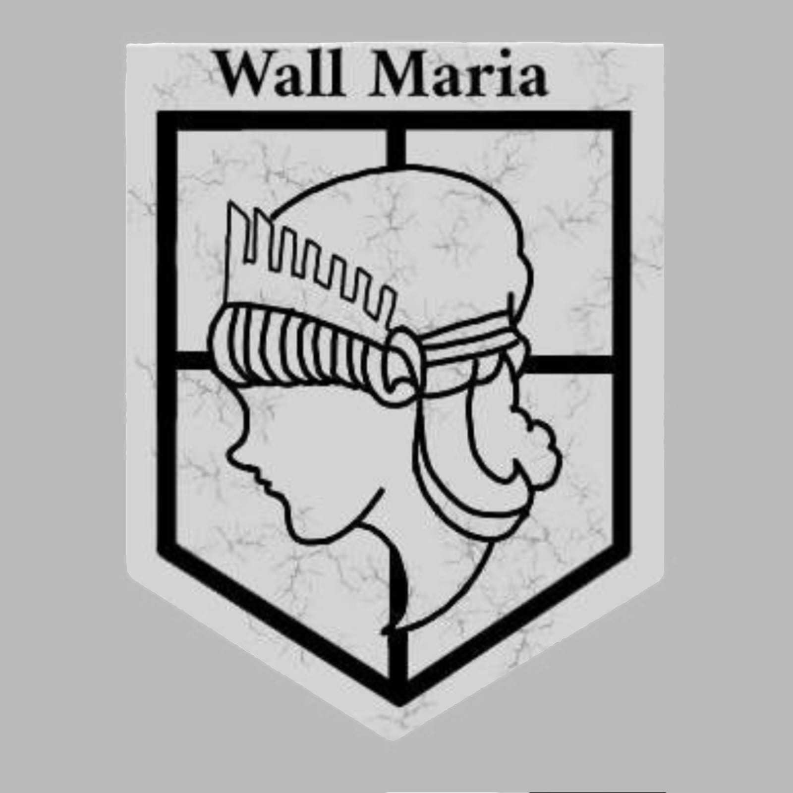
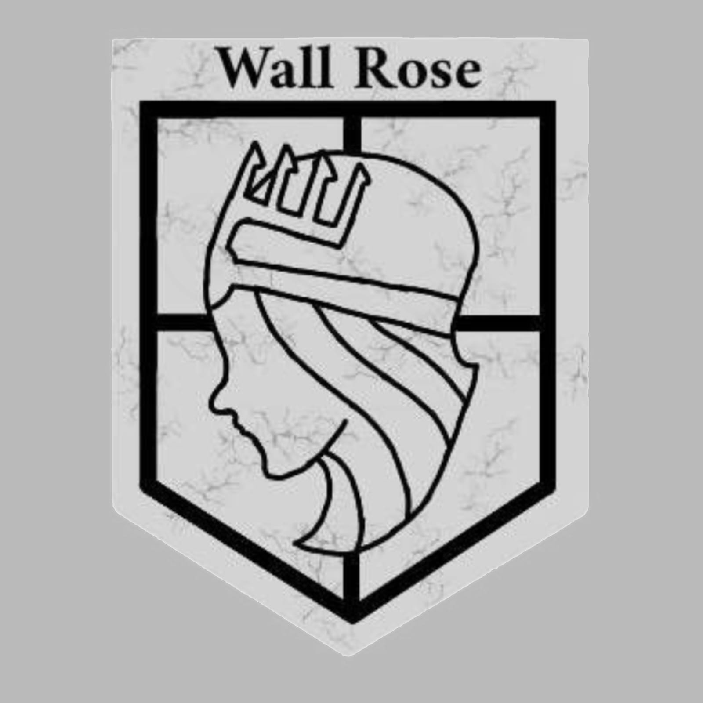
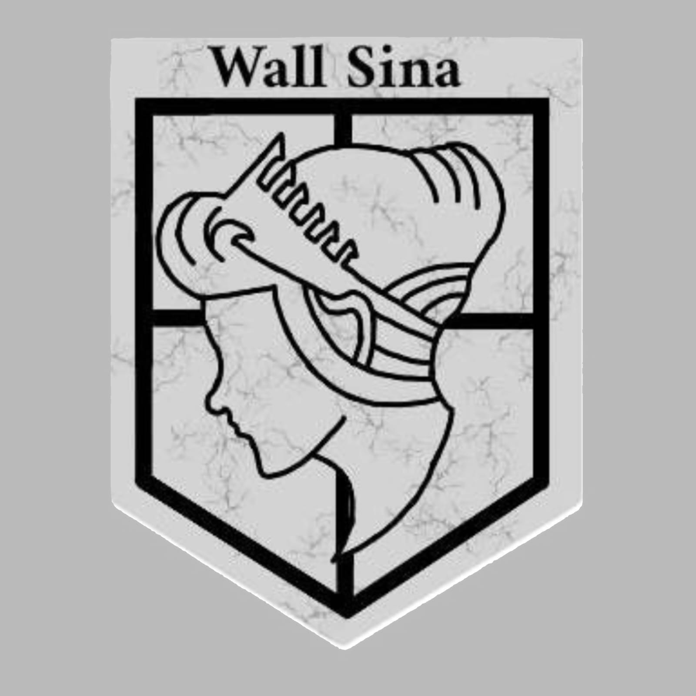
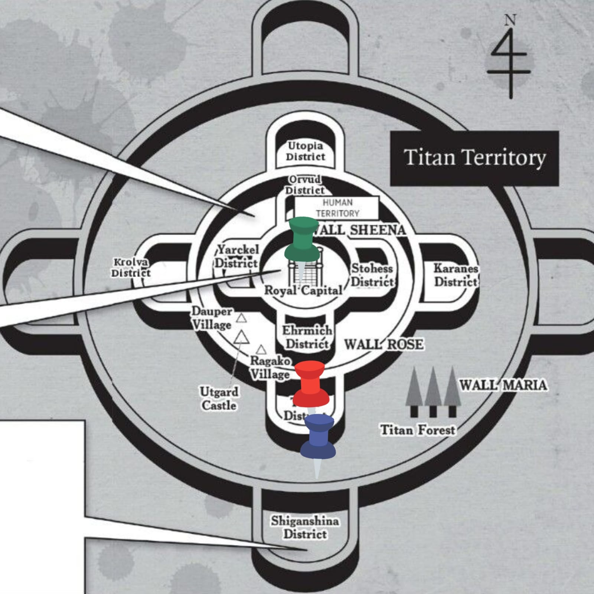
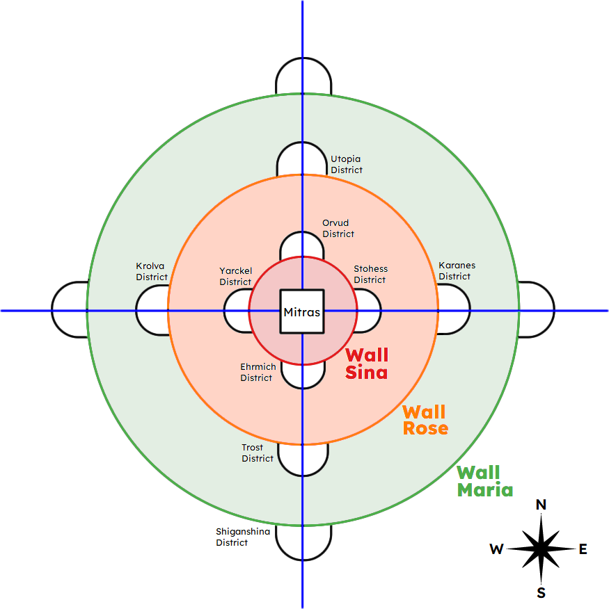

Reconhecimento
É a vanguarda militar responsável por sair da segurança das muralhas para explorar o território exterior dominado pelos Titãs. O seu principal objetivo é estudar a biologia dos inimigos, mapear rotas e tentar reconquistar o terreno perdido pela humanidade. Embora seja a divisão com a maior taxa de mortalidade e constantemente contestada pela população devido aos altos custos, sua importância é vital, pois eles são os únicos que buscam ativamente respostas sobre o mundo e a única esperança real de expansão e liberdade para a raça humana.

Guarnição
É a maior força militar em termos de contingente, responsável pela manutenção da ordem, patrulhamento e, principalmente, pela defesa direta das muralhas. Seus soldados cuidam dos canhões, fortificam as defesas e são os primeiros a entrar em combate caso uma muralha seja invadida. O objetivo principal é garantir a segurança interna e a integridade física das estruturas que protegem as cidades. Sua importância reside na estabilidade do dia a dia; sem a prontidão e o trabalho logístico da Guarnição, a civilização entraria em colapso antes mesmo de qualquer ataque em grande escala.

Polícia Militar
É a divisão de elite mais cobiçada pelos recrutas, pois apenas os dez melhores alunos de cada ciclo de treinamento podem escolher entrar nela. Eles operam no interior da muralha mais interna (Wall Sina), atuando como a força policial pessoal do Rei, responsáveis por manter a ordem pública, controlar recursos fiscais e supervisionar as outras divisões. Embora frequentemente criticada pela corrupção e pelo comodismo de viver longe do perigo dos Titãs, sua importância política é imensa, sendo a engrenagem que garante a manutenção do governo e a sobrevivência do sistema político vigente.
Muralhas
As Três muralhas
A humanidade se protege por meio de três grandes muralhas concêntricas: a Muralha Maria (externa), a Muralha Rose (intermediária) e a Muralha Sina (interna). Cada uma delas possui cerca de 50 metros de altura e protege o que resta da civilização contra a invasão dos Titãs.



Área de atuação

